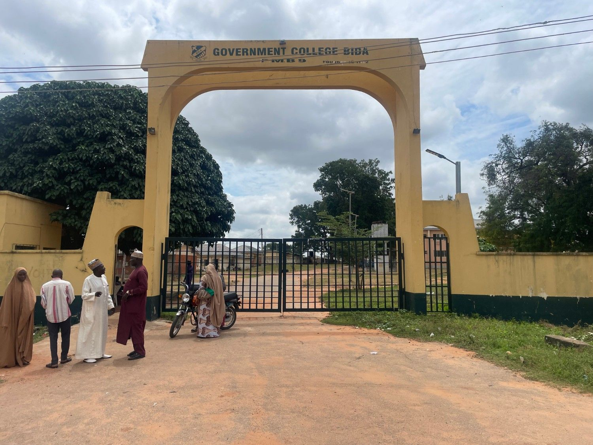
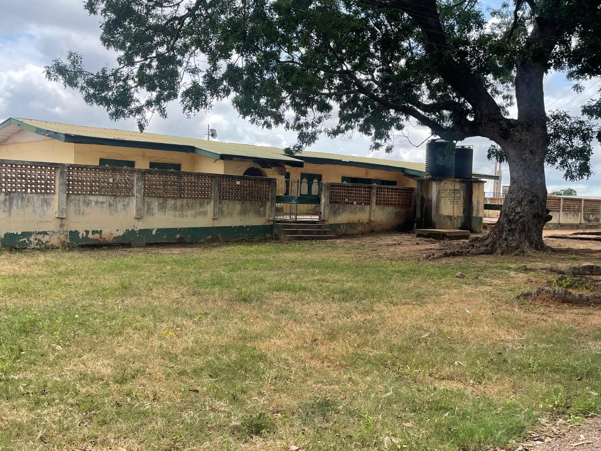

 GCBGovernment College Bida
Government College Bida
GCBGovernment College Bida
Government College Bida
GCBGovernment College Bida
Government College Bida
GCBGovernment College Bida
Government College Bida
Explore more than a century of learning and leadership.
Join GCBFind entry requirements and information for families.
Our communityMeet some of the graduates shaping our shared legacy.
The values and purpose at the heart of GCB.
Steady effort. Lasting achievement.
Guiding the next generation through learning, discipline and service.
 Principal since 2025
Principal since 2025An experienced educator committed to academic growth and student development at Government College Bida.
Mallam Mohammed A. Kolo Manbe was born on 16th March 1967, in Mambe, Lavun Local Government Area of Niger State. He attended Mambe Primary School from 1977 to 1983 and Community Commercial Technical College Vunchi from 1983 to 1987. He earned his NCE in Economics/Government from the Federal College of Education, Kontagora, in 1993 and a Bachelor of Education in Economics from Ambrose Alli University, Ekpoma, in 2007. After years of service to GCB, he was appointed Principal on 25th March 2025.

A legacy since 1912Government College Bida was established in 1912, with its first intake in 1914. This historic Nigerian boys’ boarding school has produced prominent figures, including two Nigerian Heads of State, governors and ministers. It evolved through names such as Bida Middle School and Niger Provincial Secondary School before becoming Government College Bida in 1970.
Honouring the educators who have guided Government College Bida.
Headmaster
Headmaster
Superintendent of Education
Headmaster
Headmaster
GCB alumni have made lasting contributions across leadership, public service and academia.
Former Nigerian Military Head of State (1985–1993), Babangida received military training in Nigeria, India, Great Britain and the United States. He rose through the ranks and was known for his courage. During an attempted coup in 1976, he walked unarmed into a rebel-held radio station.
Born in Minna on June 13, 1942, Abubakar is a Nigerian military leader from the Middle Belt. He served as Head of State from 1998 to 1999 and handed power to a civilian government. After joining the army in 1975 and receiving formal military training in the United States, he commanded Nigeria’s United Nations peacekeeping contingent in Lebanon in 1981.
Professor Abdullahi Abdul Zuru served as Vice Chancellor at Usmanu Danfodiyo University, Sokoto, and Kebbi State University. His contributions to science and technology were recognized through his research and development work.